Для приятного и эффективного отображения диаграмм иногда полезно обратить внимание на стили окончаний и соединений.
Стиль окончания линии - это форма конца линии. Доступные стили:
tk.BUTT: Конец линии обрезан квадратно на линии, которая проходит через конечную точку.
tk.PROJECTING: Конец линии обрезан квадратно, но обрезанная линия выходит за пределы конечной точки на расстояние, равное половине ширины линии.
tk.ROUND: Конец описывает полукруг, центром которого является конечная точка.
Стиль соединения описывает форму, при которой два сегмента линии встречаются под углом.
tk.ROUND: Соединение представляет собой круг, центрированный в точке, где пересекаются смежные сегменты линии.
tk.BEVEL: Плоский фасет отрисовывается под углом, промежуточным между углами смежных линий.
tk.MITER: Края смежных сегментов линии продолжаются, чтобы встретиться в острой точке.
Эта иллюстрация показывает, как работают опции окончаний и соединений Tkinter с линией, состоящей из двух соединенных сегментов. Маленькие красные кружки показывают местоположение точек, определяющих эту линию.
